소방설비기사(전기분야) (2020-08-22 기출문제)
1과목: 소방원론
1. 공기의 평균 분자량이 29일 때 이산화탄소 기체의 증기비중은 얼마인가?
- 1.44
- 1.52
- 2.88
- 3.24
(정답률: 82%)

2. 밀폐된 공간에 이산화탄소를 방사하여 산소의 체적 농도를 12% 되게 하려면 상대적으로 방사된 이산화탄소의 농도는 얼마가 되어야 하는가?
- 25.40%
- 28.70%
- 38.35%
- 42.86%
(정답률: 69%)
3. 다음 중 고체 가연물이 덩어리보다 가루일 때 연소되기 쉬운 이유로 가장 적합한 것은?
- 발열량이 작아지기 때문이다.
- 공기와 접촉면이 커지기 때문이다.
- 열전도율이 커지기 때문이다.
- 활성에너지가 커지기 때문이다.
(정답률: 85%)
4. 다음 중 발화점이 가장 낮은 물질은?
- 휘발유
- 이황화탄소
- 적린
- 황린
(정답률: 53%)
5. 질식소화 시 공기 중의 산소농도는 일반적으로 약 몇 vol% 이하로 하여야 하는가?
- 25
- 21
- 19
- 15
(정답률: 81%)
6. 화재하중의 단위로 옳은 것은?
- kg/m2
- ℃/m2
- kg·L/m3
- ℃·L/m3
(정답률: 83%)
7. 제1종 분말소화약제의 주성분으로 옳은 것은?
- KHCO3
- NaHCO3
- NH4H2PO4
- Al2(SO4)3
(정답률: 77%)
8. 소화약제인 IG-541의 성분이 아닌 것은?
- 질소
- 아르곤
- 헬륨
- 이산화탄소
(정답률: 66%)
9. 다음 중 연소와 가장 관련 있는 화학반응은?
- 중화반응
- 치환반응
- 환원반응
- 산화반응
(정답률: 85%)
10. 위험물과 위험물안전관리법령에서 정한 지정수량을 옳게 연결한 것은?
- 무기과산화물 - 300kg
- 황화린 - 500kg
- 황린 - 20kg
- 질산에스테르류 – 200kg
(정답률: 61%)
11. 화재의 종류에 따른 분류가 틀린 것은?
- A급 : 일반화재
- B급 : 유류화재
- C급 : 가스화재
- D급 : 금속화재
(정답률: 88%)
12. 이산화탄소 소화약제 저장용기의 설치장소에 대한 설명 중 옳지 않는 것은?
- 반드시 방호구역 내의 장소에 설치한다.
- 온도의 변화가 적은 곳에 설치한다.
- 방화문으로 구획된 실에 설치한다.
- 해당 용기가 설치된 곳임을 표시하는 표지를 한다.
(정답률: 73%)
13. 화재의 소화원리에 따른 소화방법의 적용으로 틀린 것은?
- 냉각소화 : 스프링클러설비
- 질식소화 : 이산화탄소 소화설비
- 제거소화 : 포소화설비
- 억제소화 : 할로겐화합물 소화설비
(정답률: 85%)
14. Halon 1301의 분자식은?
- CH3Cl
- CH3Br
- CF3Cl
- CF3Br
(정답률: 78%)
15. 소화효과를 고려하였을 경우 화재 시 사용할 수 있는 물질이 아닌 것은?
- 이산화탄소
- 아세틸렌
- Halon 1211
- Halon 1301
(정답률: 87%)
16. 탄화칼슘이 물과 반응 시 발생하는 가연성 가스는?
- 메탄
- 포스핀
- 아세틸렌
- 수소
(정답률: 73%)
17. 다음 원소 중 전기 음성도가 가장 큰 것은?
- F
- Br
- Cl
- I
(정답률: 74%)
18. 건축물의 내화구조에서 바닥의 경우에는 철근콘크리트의 두께가 몇 cm 이상이어야 하는가?
- 7
- 10
- 12
- 15
(정답률: 79%)
19. 화재 시 발생하는 연소가스 중 인체에서 헤모글로빈과 결합하여 혈액의 산소운반을 저해하고 두통, 근육조절의 장애를 일으키는 것은?
- CO2
- CO
- HCN
- H2S
(정답률: 83%)
20. 인화점이 20℃인 액체위험물을 보관하는 창고의 인화 위험성에 대한 설명 중 옳은 것은?
- 여름철에 창고 안이 더워질수록 인화의 위험성이 커진다.
- 겨울철에 창고 안이 추워질수록 인화의 위험성이 커진다.
- 20℃에서 가장 안전하고 20℃ 보다 높아지거나 낮아질수록 인화의 위험성이 커진다.
- 인화의 위험성은 계절의 온도와는 상관없다.
(정답률: 82%)
2과목: 소방전기회로
21. 최대눈금이 200mA, 내부저항이 0.8Ω인 전류계가 있다. 8mΩ의 분류기를 사용하여 전류계의 측정범위를 넓히면 몇 A까지 측정할 수 있는가?
- 19.6
- 20.2
- 21.4
- 22.8
(정답률: 61%)
22. 5Ω의 저항과 2Ω의 유도성 리액턴스를 직렬로 접속한 회로에 5A의 전류를 흘렀을 때 이 회로의 복소전력(VA)은?
- 25+j10
- 10+j25
- 125+j50
- 50+j125
(정답률: 52%)
23. 그림과 같은 회로에서 전압계 Ⓥ가 10V일 때 단자 A-B 간의 전압은 몇 V 인가?
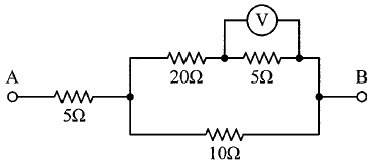
- 50
- 85
- 100
- 135
(정답률: 53%)
24. 50Hz의 3상 전압을 전파 정류하였을 때 리플(맥동) 주파수(Hz)는?
- 50
- 100
- 150
- 300
(정답률: 59%)
25. 개루프 제어와 비교하여 폐루프 제어에서 반드시 필요한 장치는?
- 안정도를 좋게 하는 장치
- 제어대상을 조작하는 장치
- 동작신호를 조절하는 장치
- 기준입력신호와 주궤환신호를 비교하는 장치
(정답률: 69%)
26. 그름의 시퀀스 회로와 등가인 논리 게이트는?
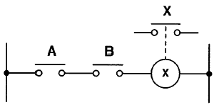
- OR게이트
- AND게이트
- NOT게이트
- NOR게이트
(정답률: 76%)
27. 전압이득이 60dB인 증폭기와 궤환율(β)이 0.01인 궤환회로를 부궤환 증폭기로 구성하였을 때 전체 이득은 약 몇 dB인가?
- 20
- 40
- 60
- 80
(정답률: 38%)
28. 지하 1층, 지상 2층, 연면적이 1500m2인 기숙사에서 지상 2층에 설치된 차동식스포트형감지기가 작동하였을 때 전 층의 지구경종이 동작되었다. 각 층 지구경종의 정격전류가 60mA 이고, 24V가 인가되고 있을 때 모든 지구경종에서 소비되는 총 전력(W)는?
- 4.23
- 4.32
- 5.67
- 5.76
(정답률: 61%)
29. 진공 중에 놓인 5μC의 점전하에서 2m되는 점에서의 전계는 몇 V/m 인가?
- 11.25 × 103
- 16.25 × 103
- 22.25 × 103
- 28.25 × 103
(정답률: 56%)
30. 열팽창식 온도계가 아닌 것은?
- 열전대 온도계
- 유리 온도계
- 바이메탈 온도계
- 압력식 온도계
(정답률: 65%)
31. 3상 유도전동기를 Y결선으로 기동할 때 전류의 크기(|IY|)와 △결선으로 기동할 때 전류의 크기(|I△|)의 관계로 옳은 것은?
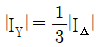
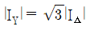
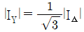
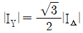
(정답률: 68%)
32. 역률 0.8인 전동기에 200V의 교류전압을 가하였더니 10A의 전류가 흘렀다. 피상전력은 몇 VA인가?
- 1000
- 1200
- 1600
- 2000
(정답률: 51%)
33. 다음 중 강자성체에 속하지 않는 것은?
- 니켈
- 알루미늄
- 코발트
- 철
(정답률: 72%)
34. 프로세스제어의 제어량이 아닌 것은?
- 액위
- 유량
- 온도
- 자세
(정답률: 73%)
35. 3상 농형 유도전동기의 기동법이 아닌 것은?
- Y-△ 기동법
- 기동 보상기법
- 2차 저항 기동법
- 리액터 기동법
(정답률: 68%)
36. 100V, 500W의 전열선 2개를 같은 전압에서 직렬로 접속한 경우와 병렬로 접속한 경우에 각 전열선에서 소비되는 전력은 각각 몇 W 인가?
- 직렬 : 250, 병렬 : 500
- 직렬 : 250, 병렬 : 1000
- 직렬 : 500, 병렬 : 500
- 직렬 : 500, 병렬 : 1000
(정답률: 65%)
37. 그림과 같은 논리회로의 출력 Y는?
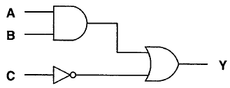
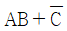
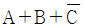
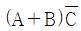
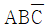
(정답률: 76%)
38. 단상변압기 3대를 △결선하여 부하에 전력을 공급하고 있는 중 변압기 1대가 고장 나서 V결선으로 바꾼 경우에 고장 전과 비교하여 몇 % 출력을 낼 수 있는가?
- 50
- 57.7
- 70.7
- 86.6
(정답률: 66%)
39. 대칭 n상의 환상결선에서 선전류와 상전류(환상전류) 사이의 위상차는?
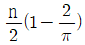
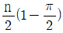
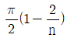
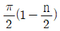
(정답률: 49%)
40. 공기중에서 50kW 방사 전력이 안테나에서 사방으로 균일하게 방사될 때, 안테나에서 1km 거리에 있는 점에서의 전계의 실효값은 약 몇 V/m 인가?
- 0.87
- 1.22
- 1.73
- 3.98
(정답률: 46%)
3과목: 소방관계법규
41. 소방기본법령상 화재피해조사 중 재산피해조사의 조사범위에 해당하지 않는 것은?
- 소화활동 중 사용된 물로 인한 피해
- 열에 의한 탄화, 용융, 파손 등의 피해
- 소방활동 중 발생한 사망자 및 부상자
- 연기, 물품반출, 화재로 인한 폭발 등에 의한 피해
(정답률: 74%)
42. 위험물안전관리법령상 제조소의 기준에 따라 건축물의 외벽 또는 이에 상당하는 공작물의 외측으로부터 제조소의 외벽 또는 이에 상당하는 공작물의 외측까지의 안전거리 기준으로 틀린 것은? (단, 제6류 위험물을 취급하는 제조소를 제외하고, 건축물에 불연재료로 된 방화상 유효한 담 또는 벽을 설치하지 않은 경우이다.)
- 의료법에 의한 종합병원에 있어서는 30m 이상
- 도시가스사업법에 의한 가스공급시설에 있어서는 20m 이상
- 사용전압 35000V를 초과하는 특고압가공전선에 있어서는 5m 이상
- 문화재보호법에 의한 유형문화재와 기념물 중 지정문화재에 있어서는 30m 이상
(정답률: 68%)
43. 위험물안전관리법령상 허가를 받지 아니하고 당해 제조소등을 설치하거나 그 위치·구조 또는 설비를 변경할 수 있으며, 신고를 하지 아니하고 위험물의 품명·수량 또는 지정수량의 배수를 변경할 수 있는 기준으로 옳은 것은?
- 축산용으로 필요한 건조시설을 위한 지정수량 40배 이하의 저장소
- 수산용으로 필요한 건조시설을 위한 지정수량 30배 이하의 저장소
- 농예용으로 필요한 난방시설을 위한 지정수량 40배 이하의 저장소
- 주택의 난방시설(공동주택의 중앙난방시설 제외)을 위한 저장소
(정답률: 70%)
44. 소방시설공사업법령상 공사감리자 지정대상 특정소방대상물의 범위가 아닌 것은?
- 제연설비를 신설·개설하거나 제연구역을 증설할 때
- 연소방지설비를 신설·개설하거나 살수구역을 증설할 때
- 캐비닛형 간이스프링클러설비를 신설·개설하거나 방호·방수 구역을 증설할 때
- 물분무등소화설비(호스릴 방식의 소화설비 제외)를 신설·개설하거나 방호·방수 구역을 증설할 때
(정답률: 73%)
45. 다음 중 소방기본법령상 특수가연물에 해당하는 품명별 기준수량으로 틀린 것은?
- 사류 1000 kg 이상
- 면화류 200 kg 이상
- 나무껍질 및 대팻밥 400 kg 이상
- 넝마 및 종이부스러기 500 kg 이상
(정답률: 74%)
46. 소방기본법령상 소방대장의 권한이 아닌 것은?
- 화재 현장에 대통령령으로 정하는 사람외에는 그 구역에 출입하는 것을 제한할 수 있다.
- 화재 진압 등 소방활동을 위하여 필요할 때에는 소방용수 외에 댐·저수지 등의 물을 사용할 수 있다.
- 국민의 안전의식을 높이기 위하여 소방박물관 및 소방체험관을 설립하여 운영할 수 있다.
- 불이 번지는 것을 막기 위하여 필요할 때에는 불이 번질 우려가 있는 소방대상물 및 토지를 일시적으로 사용할 수 있다.
(정답률: 83%)
47. 화재예방, 소방시설 설치·유지 및 안전관리에 관한 법령상 단독경보형 감지기를 설치하여야 하는 특정소방대상물의 기준으로 틀린 것은?(문제 오류로 가답안 발표시 1번으로 발표되었지만 확정답안 발표시 1, 3번이 정답처리 되었습니다. 여기서는 가답안인 1번을 누르시면 정답 처리 됩니다.)
- 연면적 600m2 미만의 기숙사
- 연면적 600m2 미만의 숙박시설
- 연면적 1000m2 미만의 아파트
- 교육연구시설 또는 수련시설 내에 있는 합숙소 또는 기숙사로서 연면적 2000m2 미만인 것
(정답률: 74%)
48. 소방기본법령상 시장지역에서 화재로 오인할 만한 우려가 있는 불을 피우거나 연막소독을 하려는 자가 신고를 하지 아니하여 소방자동차를 출동하게 한 자에 대한 과태료 부과·징수권자는?
- 국무총리
- 시·도지사
- 행정안전부 장관
- 소방본부장 또는 소방서장
(정답률: 70%)
49. 화재예방, 소방시설 설치·유지 및 안전관리에 관한 법령상 1급 소방안전관리 대상물에 해당하는 건축물은?
- 지하구
- 층수가 15층인 공공업무시설
- 연면적 15000m2 이상인 동물원
- 층수가 20층이고, 지상으로부터 높이가 100미터인 아파트
(정답률: 57%)
50. 화재예방, 소방시설 설치·유지 및 안전관리에 관한 법령상 수용인원 산정 방법 중 침대가 없는 숙박시설로서 해당 특정소방대상물의 종사자의 수는 5명, 복도, 계단 및 화장실의 바닥면적을 제외한 바닥 면적이 158m2인 경우의 수용인원은 약 몇 명인가?
- 37
- 45
- 58
- 84
(정답률: 60%)
51. 화재예방, 소방시설 설치·유지 및 안전관리에 관한 법령상 소방특별조사 결과 소방대상물의 위치 상황이 화재 예방을 위하여 보완될 필요가 있을 것으로 예상되는 때에 소방대상물의 개수·이전·제거, 그 밖의 필요한 조치를 관계인에게 명령할 수 있는 사람은?
- 소방서장
- 경찰청장
- 시·도지사
- 해당구청장
(정답률: 65%)
52. 화재예방, 소방시설 설치·유지 및 안전관리에 관한 법령상 지하가 중 터널로서 길이가 1천미터일 때 설치하지 않아도 되는 소방시설은?
- 인명구조기구
- 옥내소화전설비
- 연결송수관설비
- 무선통신보조설비
(정답률: 47%)
53. 소방시설공사업법령상 소방시설공사의 하자보수 보증기간이 3년이 아닌 것은?
- 자동소화장치
- 무선통신보조설비
- 자동화재탐지설비
- 간이스프링클러설비
(정답률: 67%)
54. 화재예방, 소방시설 설치·유지 및 안전관리에 관한 법령상 스프링클러설비를 설치하여야 하는 특정소방대상물의 기준으로 틀린 것은? (단, 위험물 저장 및 처리 시설 중 가스시설 또는 지하구는 제외한다.)
- 복합건축물로서 연면적 3500m2 이상인 경우에는 모든 층
- 창고시설(물류터미널은 제외)로서 바닥면적 합계가 5000m2 이상인 경우에는 모든 층
- 숙박이 가능한 수련시설 용도로 사용되는 시설의 바닥면적의 합계가 600m2 이상인 것은 모든 층
- 판매시설, 운수시설 및 창고시설(물류터미널에 한정)로서 바닥면적의 합계가 5000m2 이상이거나 수용인원이 500명 이상인 경우에는 모든 층
(정답률: 53%)
55. 국민의 안전의식과 화재에 대한 경각심을 높이고 안전문화를 정착시키기 위한 소방의 날은 몇 월 며칠인가?
- 1월 19일
- 10월 9일
- 11월 9일
- 12월 19일
(정답률: 79%)
56. 위험물안전관리법령상 위험물시설의 설치 및 변경 등에 관한 기준 중 다음 ( ) 안에 들어갈 내용으로 옳은 것은?
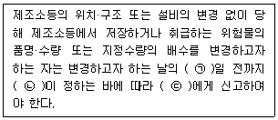
- ㉠ : 1, ㉡ : 대통령령, ㉢ : 소방본부장
- ㉠ : 1, ㉡ : 행정안전부령, ㉢ : 시·도지사
- ㉠ : 14, ㉡ : 대통령령, ㉢ : 소방서장
- ㉠ : 14, ㉡ : 행정안전부령, ㉢ : 시·도지사
(정답률: 64%)
57. 위험물안전관리법령상 위험물취급소의 구분에 해당하지 않는 것은?
- 이송취급소
- 관리취급소
- 판매취급소
- 일반취급소
(정답률: 55%)
58. 소방기본법령상 화재가 발생하였을 때 화재의 원인 및 피해 등에 대한 조사를 하여야 하는 자는?
- 시·도지사 또는 소방본부장
- 소방청장·소방본부장 또는 소방서장
- 시·도지사·소방서장 또는 소방파출소장
- 행정안전부장관·소방본부장 또는 소방파출소장
(정답률: 77%)
59. 화재예방, 소방시설 설치·유지 및 안전관리에 관한 법령상 1년 이하의 징역 또는 1천만원 이하의 벌금 기준에 해당하는 경우는?
- 소방용품의 형식승인을 받지 아니하고 소방용품을 제조하거나 수입한 자
- 형식승인을 받은 소방용품에 대하여 제품검사를 받지 아니한 자
- 거짓이나 그 밖의 부정한 방법으로 제품검사 전문기관으로 지정을 받은 자
- 소방용품에 대하여 형상 등의 일부를 변경한 후 형식승인의 변경승인을 받지 아니한 자
(정답률: 47%)
60. 다음 중 화재예방, 소방시설 설치·유지 및 안전관리에 관한 법령상 소방시설관리업을 등록할 수 있는 자는?
- 피성년후견인
- 소방시설관리업의 등록이 취소된 날부터 2년이 경과된 자
- 금고 이상의 형의 집행유예를 선고받고 그 유예기간 중에 있는 자
- 금고 이상의 실형을 선고받고 그 집행이 면제된 날부터 2년이 지나지 아니한 자
(정답률: 80%)
4과목: 소방전기시설의 구조 및 원리
61. 자동화재속보설비의 속보기의 성능인증 및 제품검사의 기술기준에 따라 교류입력측과 외함 간의 절연저항은 직류 500V의 절연저항계로 측정한 값이 몇 MΩ 이상이어야 하는가?
- 5
- 10
- 20
- 50
(정답률: 55%)
62. 무선통신보조설비의 화재안전기준(NFSC 5⑤)에 따라 금속제 지지금구를 사용하여 무선통신 보조설비의 누설동축케이블을 벽에 고정시키고자 하는 경우 몇 m 이내마다 고정시켜야 하는가? (단, 불연재료로 구획된 반자 안에 설치하는 경우는 제외한다.)
- 2
- 3
- 4
- 5
(정답률: 42%)
63. 비상경보설비 및 단독경보형감지기의 화재안전기준(NFSC 201)에 따라 비상벨설비의 음향장치의 음량은 부착된 음향장치의 중심으로부터 1m 떨어진 위치에서 몇 dB 이상이 되는 것으로 하여야 하는가?
- 60
- 70
- 80
- 90
(정답률: 73%)
64. 자동화재탐지설비 및 시각경보장치의 화재안전기준(NFSC 203)에 따라 외기에 면하여 상시 개방된 부분이 있는 차고·주차장·창고 등에 있어서는 외기에 면하는 각 부분으로부터 몇 m 미만의 범위 안에 있는 부분은 경계구역의 면적에 산입하지 아니 하는가?
- 1
- 3
- 5
- 10
(정답률: 61%)
65. 누전경보기의 형식승인 및 제품검사의 기술기준에 따른 누전경보기 수신부의 기능검사 항목이 아닌 것은?
- 충격시험
- 진공가압시험
- 과입력전압시험
- 전원전압변동시험
(정답률: 64%)
66. 비상방송설비의 화재안전기준(NFSC 202)에 따른 음향장치의 구조 및 성능에 대한 기준이다. 다음 ( )에 들어갈 내용으로 옳은 것은?
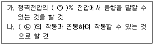
- ㉠ 65, ㉡ 자동화재탐지설비
- ㉠ 80, ㉡ 자동화재탐지설비
- ㉠ 65, ㉡ 단독경보형감지기
- ㉠ 80, ㉡ 단독경보형감지기
(정답률: 81%)
67. 비상조명등의 화재안전기준(NFSC 304)에 따라 조도는 비상조명등이 설치된 장소의 각 부분의 바닥에서 몇 lx 이상이 되도록 하여야 하는가?
- 1
- 3
- 5
- 10
(정답률: 74%)
68. 비상방송설비의 화재안전기준(NFSC 202)에 따른 용어의 정의에서 소리를 크게 하여 멀리까지 전달될 수 있도록 하는 장치로써 일명 “스피커”를 말하는 것은?
- 확성기
- 증폭기
- 사이렌
- 음량조절기
(정답률: 76%)
69. 자동화재탐지설비 및 시각경보장치의 화재안전기준(NFSC 203)에 따른 중계기에 대한 시설기준으로 틀린 것은?
- 조작 및 점검에 편리하고 화재 및 침수 등의 재해로 인한 피해를 받을 우려가 없는 장소에 설치할 것
- 수신기에서 직접 감지기회로의 도통시험을 행하지 아니하는 것에 있어서는 수신기와 발신기 사이에 설치할 것
- 수신기에 따라 감시되지 아니하는 배선을 통하여 전력을 공급받는 것에 있어서는 전원입력측에 배선에 과전류 차단기를 설치할 것
- 수신기에 따라 감시되지 아니하는 배선을 통하여 전력을 공급받는 것에 있어서는 해당 전원의 정전이 즉시 수신기에 표시되는 것으로 할 것
(정답률: 56%)
70. 비상콘센트설비의 화재안전기준(NFSC 504)에 따라 비상콘센트용의 풀박스 등은 방청도장을 한 것으로서, 두께 몇 mm 이상의 철판으로 하여야 하는가?
- 1.2
- 1.6
- 2.0
- 2.4
(정답률: 73%)
71. 누전경보기의 형식승인 및 제품검사의 기술기준에 따라 누전경보기의 변류기는 경계전로에 정격전류를 흘리는 경우, 그 경계전로의 전압강하는 몇 V 이하이어야 하는가? (단, 경계전로의 전선을 그 변류기에 관통시키는 것은 제외한다.)
- 0.3
- 0.5
- 1.0
- 3.0
(정답률: 57%)
72. 자동화재탐지설비 및 시각경보장치의 화재안전기준(NFSC 203)에 따른 배선의 시설기준으로 틀린 것은?
- 감지기 사이의 회로의 배선은 송배전식으로 할 것
- 자동화재탐지설비의 감지기 회로의 전로저항은 50Ω 이하가 되도록 할 것
- 수신기의 각 회로별 종단에 설치되는 감지기에 접속되는 배선의 전압은 감지기 정격전압의 80% 이상이어야 할 것
- 피(P)형 수신기 및 지피(G.P.)형 수신기의 감지기 회로의 배선에 있어서 하나의 공통선에 접속할 수 있는 경계구역은 10개 이하로 할 것
(정답률: 68%)
73. 예비전원의 성능인증 및 제품검사의 기술기준에 따른 예비전원의 구조 및 성능에 대한 설명으로 틀린 것은?
- 예비전원을 병렬로 접속하는 경우에는 역충전방지 등의 조치를 강구하여야 한다.
- 배선은 충분한 전류 용량을 갖는 것으로서 배선의 접속이 적합하여야 한다.
- 예비전원에 연결되는 배선의 경우 양극은 청색, 음극은 적색으로 오접속방지 조치를 하여야 한다.
- 축전지를 직렬 또는 병렬로 사용하는 경우에는 용량(전압, 전류)이 균일한 축전지를 사용하여야 한다.
(정답률: 68%)
74. 비상콘센트설비의 성능인증 및 제품검사의 기술기준에 따라 비상콘센트설비에 사용되는 부품에 대한 설명으로 틀린 것은?
- 진공차단기는 KS C 8321(진공차단기)에 적합하여야 한다.
- 접속기는 KS C 83⑤(배선용 꽂음 접속기)에 적합하여야 한다.
- 표시등의 소켓은 접속이 확실하여야 하며 쉽게 전구를 교체할 수 있도록 부착하여야 한다.
- 단자는 충분한 전류용량을 갖는 것으로 하여야 하며 단자의 접속이 정확하고 확실하여야 한다.
(정답률: 53%)
75. 소방시설용 비상전원수전설비의 화재안전기준(NFSC 602)에 따른 제1종 배전반 및 제1종 분전반의 시설기준으로 틀린 것은?
- 전선의 인입구 및 입출구는 외함에 누출하여 설치하면 아니 된다.
- 외함의 문은 2.3mm 이상의 강판과 이와 동등 이상의 강도와 내화성능이 있는 것으로 제작하여야 한다.
- 공용배전판 및 공용분전판의 경우 소방회로와 일반회로에 사용하는 배선 및 배선용 기기는 불연재료로 구획되어야 한다.
- 외함은 금속관 또는 금속제 가요전선관을 쉽게 접속할 수 있도록 하고, 당해 접속부분에는 단열조치를 하여야 한다.
(정답률: 41%)
76. 비성경보설비 및 단독경보형감지기의 화재안전기준(NFSC 201)에 따른 발신기의 시설기준으로 틀린 것은?
- 발신기의 위치표시등은 함의 하부에 설치한다.
- 조작스위치는 바닥으로부터 0.8m 이상 1.5m 이하의 높이에 설치할 것
- 복도 또는 별도로 구획된 실로서 보행거리가 40m 이상일 경우에는 추가로 설치하여야 한다.
- 특정소방대상물의 층마다 설치하되, 해당 특정소방대상물의 각 부분으로부터 하나의 발신기까지의 수평거리가 25m 이하가 되도록 할 것
(정답률: 72%)
77. 유도등의 형식승인 및 제품검사의 기술기준에 따른 유도등의 일반구조에 대한 설명으로 틀린 것은?
- 축전지에 배선 등을 직접 납땜하지 아니하여야 한다.
- 충전부가 노출되지 아니한 것은 300V를 초과할 수 있다.
- 예비전원을 직렬로 접속하는 경우는 역충전 방지 등의 조치를 강구하여야 한다.
- 유도등에는 점멸, 음성 또는 이와 유사한 방식 등에 의한 유도장치를 설치할 수 있다.
(정답률: 59%)
78. 자동화재탐지설비 및 시각경보장치의 화재안전기준(NFSC 203)에 따라 지하층·무장층 등으로서 환기가 잘되지 아니하거나 실내 면적이 40m2 미만인 장소에 설치하여야 하는 적응성이 있는 감지기가 아닌 것은?
- 불꽃감지기
- 광전식분리형감지기
- 정온식스포트형감지기
- 아날로그방식의 감지기
(정답률: 58%)
79. 무선통신보조설비의 화재안전기준(NFSC 5⑤)에 따른 무선기기의 접속단자에 대한 시설기준이다. 다음 ( )에 들어갈 내용으로 옳은 것은?
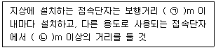
- ㉠ 300, ㉡ 3
- ㉠ 300, ㉡ 5
- ㉠ 500, ㉡ 3
- ㉠ 500, ㉡ 5
(정답률: 68%)
80. 유도등 및 유도표지의 화재안전기준(NFSC 303)에 따른 피난구유도등의 설치장소로 틀린 것은?
- 직통계단
- 직통계단의 계단실
- 안전구획된 거실로 통하는 출입구
- 옥외로부터 직접 지하로 통하는 출입구
(정답률: 70%)